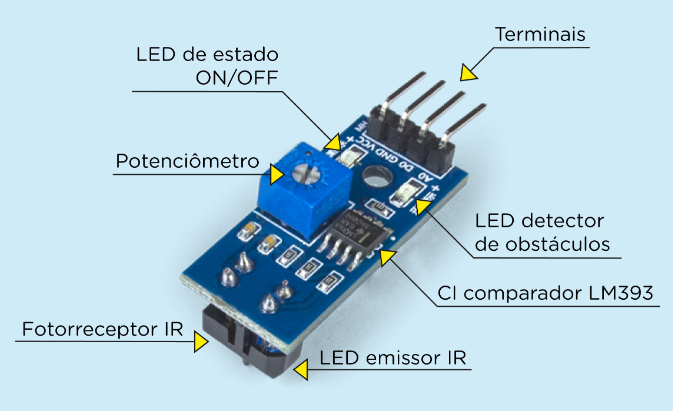
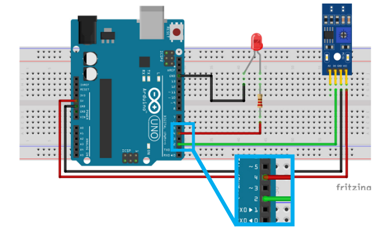
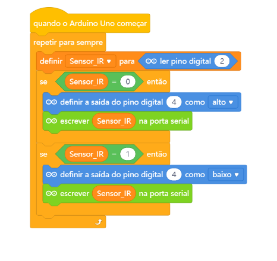

O funcionamento do Sensor de Obstáculo IR é simples e ocorre da seguinte maneira: o LED emissor permanece constantemente
emitindo radiação infravermelha com o terminal D0 em nível lógico
alto (5 V) e, quando encontra um obstáculo em seu raio de ação, é
refletida e detectada pelo fotorreceptor, o qual envia a informação
para CI comparador, colocando o pino D0 em nível lógico baixo (0 V)
e ligando o LED detector de obstáculos.

também temos o potenciômetro para calibra esta leitura para mais ou menos sensivel esta percepição de presença
Aqui vemos a montagem onde para percepição de algo acende o LEDs

Podemos trocar este led por um rele 5v e ligar varios outro equipamentos como luz em corredores escuros, em elevadores portão eletrico como em
porta de shopping e etc ...
Programação basta criar uma variavel chamada sensor_IR e seguir os blocos abaixo:
